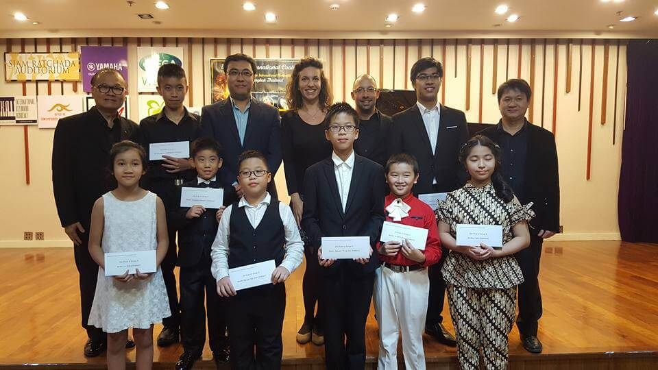
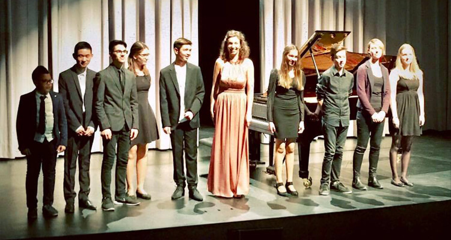

Kasia Wieczorek has developed a very giving and flowing sense of energy and communication - crucial for immediate rapport between players - which she places at the heart of her educative stance for the next generations of pianists and instrumentalists.
Having accompanied countless high-profile masterclasses and international competitions, Kasia Wieczorek has developed a very giving and flowing sense of energy and communication - crucial for immediate rapport between players - which she places at the heart of her educative stance for the next generations of pianists and instrumentalists. Her teaching revolves around providing highly personalized resources and support for each career-making decision, as well as highlighting the usefulness of joy and emotional fulfillment that should be used in music-making for its ability to ensure a consistently unique experience.

Her enthusiasm for teaching has been spurred on through working alongside some of the most outstanding musicians of our time.
Further, Kasia Wieczorek posses a remarkable ability to awaken the buried and hidden talents of the younger generation, in particular disadvantaged youth. Since 2011 she has been a member of "Rhapsody in School", the International Music Organization founded by Lars Vogt.
Her enthusiasm for teaching has been spurred on through working alongside some of the most outstanding musicians of our time: Steven Isserlis, Prof. Ana Chumachenko, Prof. Wolfgang Boettcher (former cellist of the Berliner Philharmoniker), Nabuko Imai, Wolfgang Emanuel Schmidt, Sol Gabetta, Julian Rachlin, Boris Kuschnir, Edda Moser, Grace Bumbry, as well as prize winners of various international competitions (the ARD Competition, Prague Spring Competition, the Aeolus Competition and the Wieniawski Competition).
